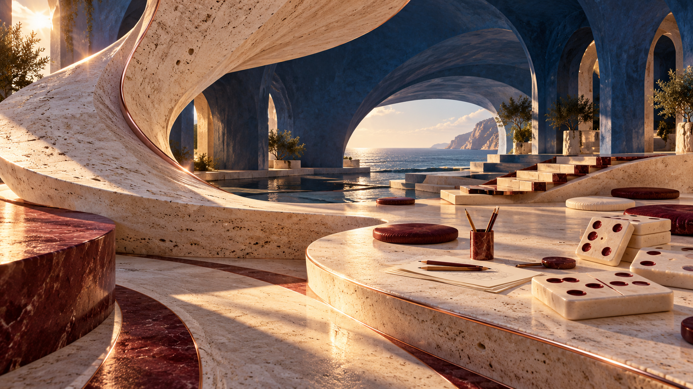

<!doctype html>
<html lang="ko"><meta charset="utf-8"><title>B — 두 지평의 만남 · 정적 아트 디렉션</title>
<style>
@font-face{font-family:DM;src:url('file:///workspace/yl-folded-playhouse-r8/public/fonts/dm-sans-regular.ttf')}@font-face{font-family:DM;src:url('file:///workspace/yl-folded-playhouse-r8/public/fonts/dm-sans-700.ttf');font-weight:700}*{box-sizing:border-box}html,body{margin:0;width:1920px;height:1080px;overflow:hidden}body{font-family:DM,'Noto Sans CJK KR',sans-serif;color:#362829;background:#ede3d2}.scene{position:relative;width:1920px;height:1080px;overflow:hidden}.environment{position:absolute;inset:0;width:100%;height:100%;object-fit:cover}.skywash{position:absolute;inset:0;background:linear-gradient(90deg,transparent 40%,#f8eadb50 66%,#f8eadb65 85%,transparent)}nav{position:absolute;top:48px;left:72px;right:72px;display:flex;align-items:center;justify-content:space-between;font-size:18px;font-weight:700;letter-spacing:.02em}.navlinks{display:flex;gap:42px;font-weight:400;font-size:15px}.hero .brand{color:#fff3df;text-shadow:0 2px 9px #261e17}.hero .footer{color:#fff3df;text-shadow:0 1px 7px #261e17}.brand em{font-weight:400;font-style:normal;color:#8a384a;padding:0 10px}.portrait{position:absolute;width:900px;height:900px;left:140px;top:132px;object-fit:contain;filter:drop-shadow(18px 25px 18px #351b2f40)}.ground-shadow{position:absolute;left:270px;top:825px;width:720px;height:75px;border-radius:50%;background:#2f263b6b;filter:blur(18px);transform:rotate(-3deg)}.foreground{position:absolute;inset:0;background:url('hero-environment.png')center/cover;clip-path:polygon(0 68%,12% 68%,24% 63%,35% 61.6%,47% 61.6%,60% 63.7%,71% 68%,76% 76%,100% 76%,100% 100%,0 100%)}.copy{position:absolute;left:1090px;top:220px;width:730px}.eyebrow{font-size:17px;letter-spacing:.1em;margin:0 0 24px;color:#783f4e}.copy h1{font-size:88px;line-height:1.15;letter-spacing:-.065em;margin:0;font-weight:700}.copy h1 .baby{font-size:98px;letter-spacing:-.075em;display:block;color:#813d50;margin-bottom:10px}.copy p{font-size:29px;line-height:1.6;letter-spacing:-.035em;margin:30px 0 32px}.cta{display:inline-flex;align-items:center;justify-content:space-between;gap:68px;border:1px solid #7d3c4d;background:#793b4c;color:#fff3e5;border-radius:60px;padding:22px 30px;font-size:24px;box-shadow:0 10px 30px #713b3c20}.cta span{font-size:29px;line-height:1}.footer{position:absolute;bottom:35px;left:72px;right:72px;display:flex;justify-content:space-between;font-size:14px;letter-spacing:.07em;color:#503d39}.arrival .environment{object-position:center}.arrival nav{color:#f8efdf}.arrival .brand em{color:#e6b9a0}.arrival .copy{left:100px;top:205px;width:780px;color:#fff3df}.arrival .copy h1{font-size:92px;line-height:1.17;text-shadow:0 2px 25px #0b1c3e55;letter-spacing:-.06em}.arrival .copy p{font-size:27px;max-width:580px}.arrival .eyebrow{color:#e9c2a4}.arrival .cta{background:#f2e7d6;color:#273551;border-color:#ead8c1;box-shadow:none}.arrival .footer{color:#fff0d9}.arrival-shade{position:absolute;inset:0;background:linear-gradient(90deg,#071d3c86 0%,#071d3c45 28%,transparent 56%)}
</style>
<main class="scene hero" id="hero"><div class="skywash"></div><div class="ground-shadow"></div><div class="foreground"></div><nav><div class="brand">YEONSEOK <em>♡</em> LISBETH</div><div class="navlinks"><span>우리 이야기</span><span>게임</span><span>건의사항</span><span>KO / ES</span></div></nav><section class="copy"><div class="eyebrow">2025. 04. 04 —</div><h1><span class="baby">Baby,</span>이거 내가<br>만들었어!</h1><p>멀리 있어도,<br>우리 둘이 같이 놀 수 있게.</p><div class="cta">같이 놀자 <span>↗</span></div></section><div class="footer"><span>한국 &nbsp; · &nbsp; República Dominicana</span><span>SCROLL TO EXPLORE ↓</span></div></main>
<main class="scene arrival" id="arrival" hidden><div class="arrival-shade"></div><nav><div class="brand">YEONSEOK <em>♡</em> LISBETH</div><div class="navlinks"><span>우리 이야기</span><span>게임</span><span>건의사항</span><span>KO / ES</span></div></nav><section class="copy"><div class="eyebrow">YEONSEOK ♡ LISBETH</div><h1>멀리 있어도,<br>우리 둘이 같이<br>놀 수 있게.</h1><p>Baby, 이거 내가 만들었어!</p><div class="cta">같이 놀자 <span>↗</span></div></section><div class="footer"><span>한국 &nbsp; · &nbsp; República Dominicana</span><span>↓</span></div></main>
<script>const arrival=location.hash==='#arrival';document.querySelector('#hero').hidden=arrival;document.querySelector('#arrival').hidden=!arrival;</script></html>
